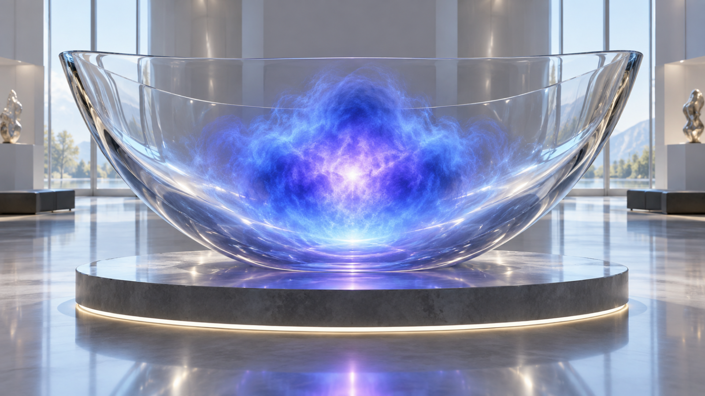
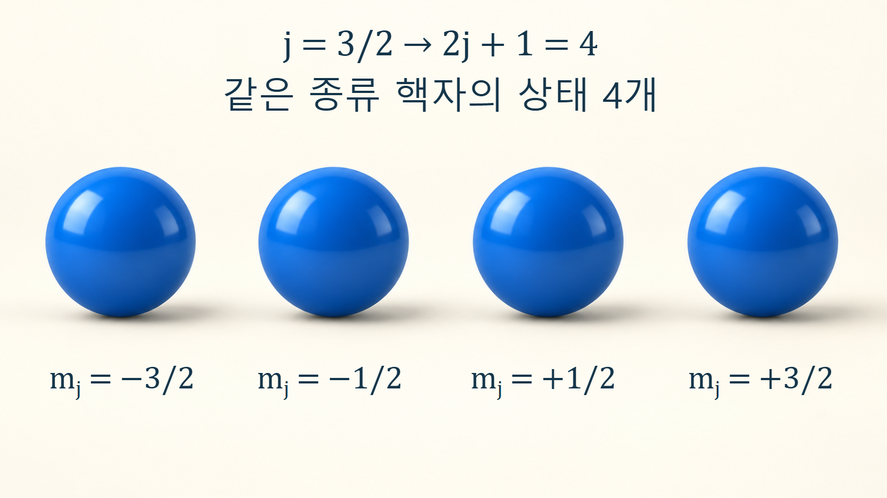
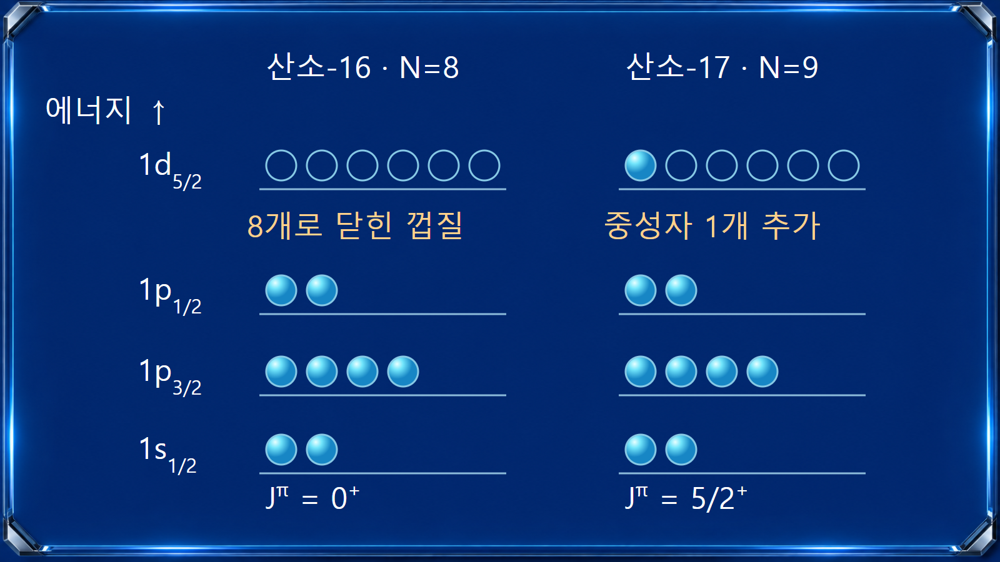

원자와 원자핵의 기초 · 015
껍질모형
핵자가 양자화된 에너지 준위와 궤도를 차례로 채운다는 원자핵 모형

껍질모형은 핵자들이 평균적인 핵퍼텐셜 안에서 허용된 양자상태를 채운다고 설명합니다. [1] 껍질은 핵자들이 달리는 고정 원형 궤도가 아니라 에너지 준위의 구조입니다. 양성자와 중성자의 상태 점유를 따로 세면 닫힌 껍질의 안정성과 홀핵자의 스핀을 이해할 수 있습니다.
많은 핵자의 영향을 평균 퍼텐셜로 바꾸는 방법
한 핵자는 나머지 핵자들과 상호작용합니다. 이를 모두 매 순간 개별 충돌로 추적하는 대신, 다른 핵자들이 만드는 평균적인 퍼텐셜 안에서 움직이는 입자로 근사하는 것이 출발점입니다. 평균장은 핵자들을 제한된 공간에 묶는 우물처럼 작용하고 그 안에는 불연속적인 에너지 상태가 생깁니다. 양성자는 전기적 반발도 받으므로 양성자와 중성자의 퍼텐셜이 완전히 같지는 않습니다. 독립입자라는 말은 핵자 사이에 힘이 없다는 뜻이 아니라 그 큰 부분을 평균장에 포함했다는 뜻입니다.
준위 이름에 들어 있는 양자수
핵자의 상태는 반경 방향의 특성, 궤도각운동량 l, 스핀과 결합한 전체각운동량 j 등으로 구분합니다. 핵자 스핀의 양자수는 s=1/2이고 l이 0보다 크면 j=l+1/2 또는 l−1/2가 가능합니다. 예를 들어 p 상태는 l=1이므로 p3/2와 p1/2로 나뉩니다. 1p3/2의 앞 숫자는 반경 방향 상태를 구분하는 표기이며 입자 세 개나 질량수를 뜻하지 않습니다. 서로 다른 교재의 앞 숫자 표기 관례도 확인해야 합니다.
상태 하나에 몇 개가 들어가는가
파울리 배타원리에 따라 같은 종류의 핵자 둘은 완전히 동일한 양자상태를 차지할 수 없습니다. 특정 j 준위에는 mj=−j부터 +j까지 1씩 다른 2j+1개 상태가 있습니다. j=3/2이면 mj는 −3/2, −1/2, +1/2, +3/2의 네 가지이며 중성자는 최대 4개 들어갈 수 있습니다. 대응하는 양성자 상태 계열도 별도로 셉니다. j에는 이미 궤도와 스핀 결합이 반영되었으므로 2j+1에 다시 스핀의 두 방향을 곱하지 않습니다. 외부장이나 대칭성이 바뀌면 같은 j 안의 상태들이 같은 에너지를 유지하는 조건도 달라집니다.

스핀과 궤도의 결합이 큰 틈을 만드는 이유
스핀-궤도 결합은 j=l+1/2인 상태와 j=l−1/2인 상태의 에너지를 다르게 만듭니다. 그 결과 단순한 조화진동자 우물에서 예상한 준위 순서와 간격이 바뀝니다. 몇 개 준위를 채운 뒤 다음 준위까지 큰 에너지 간격이 나타나면 닫힌 껍질의 효과가 뚜렷해집니다. 마법수는 이런 큰 틈과 관련된 핵자 수이며, 단순히 2j+1만 차례로 더하면 모든 핵에서 자동으로 같은 순서가 나오는 것은 아닙니다. 특히 중성자와 양성자의 비율이 크게 달라지는 영역에서는 준위 구조 자체가 변할 수 있습니다.
산소-16의 두 닫힌 껍질
산소-16은 양성자 Z=8, 중성자 N=8입니다. 가벼운 핵의 단순 구형 모형에서는 각 종류가 1s1/2의 2개 상태, 1p3/2의 4개 상태, 1p1/2의 2개 상태를 채워 합계 8개가 됩니다. 양성자와 중성자 두 계열이 모두 닫힌 껍질이므로 이중 마법핵이라고 부릅니다. 완전히 채운 준위들의 각운동량은 서로 상쇄되어, 이 단순한 점유 그림은 바닥상태의 전체 스핀 0을 이해하는 데 도움이 됩니다. 숫자 8은 총 핵자수 16의 절반을 임의로 나눈 값이 아니라 두 독립적인 점유 계산의 결과입니다.
| 같은 종류의 핵자 준위 | j | 용량 2j+1 | 누적 |
|---|---|---|---|
| 1s1/2 | 1/2 | 2 | 2 |
| 1p3/2 | 3/2 | 4 | 6 |
| 1p1/2 | 1/2 | 2 | 8 |
산소-17의 한 중성자가 남기는 특징
산소-17은 같은 Z=8에 N=9를 가집니다. 산소-16의 닫힌 핵심부를 두고 추가 중성자 하나가 주로 1d5/2 상태를 차지한다고 보면, 바닥상태 전체 스핀 J=5/2를 예상할 수 있습니다. d 상태의 l=2에서 패리티는 (−1)l=+1이므로 Jπ=5/2+가 됩니다. 이는 핵종자료에 기록된 바닥상태 값과 부합합니다. 모든 홀수 핵의 구조가 이렇게 단순하지는 않으며, 핵심부의 들뜸과 여러 배치의 혼합이 커지면 추가 계산이 필요합니다.

점유표와 실제 측정값 사이의 연결
실험에서는 껍질을 눈으로 보지 않습니다. 입자를 넣거나 빼는 반응, 핵질량 차이, 감마선 에너지와 전이 세기, 자기모멘트 등을 통해 준위와 점유 성분을 추론합니다. 서로 다른 측정량을 함께 설명하는지가 모형을 평가하는 기준입니다. 특히 단일입자 준위 에너지와 원자핵 전체의 들뜬 준위는 같은 개념이 아닙니다. 측정한 감마선 피크를 곧바로 두 단일입자 궤도 사이의 차이로 배정하면 핵자들의 결합 방식과 잔류 상호작용을 놓칠 수 있습니다.
껍질모형과 액적모형을 함께 사용하는 이유
액적모형은 많은 핵의 평균 결합과 변형 경향을 설명하고, 껍질모형은 개별 양자상태와 닫힌 껍질의 추가 안정성을 설명합니다. 정밀한 계산에서는 닫힌 핵심부 밖의 핵자들이 점유할 모형공간과 유효 상호작용을 정하고 여러 배치를 혼합합니다. 따라서 껍질모형을 단순히 독립입자 그림으로만 한정해서는 안 됩니다. 상태 용량을 검산한 뒤 실제 스핀·패리티·에너지 자료와 비교하고, 부족한 부분이 껍질 간격의 변화인지 핵심부 들뜸인지 구분하는 것이 올바른 사용법입니다.